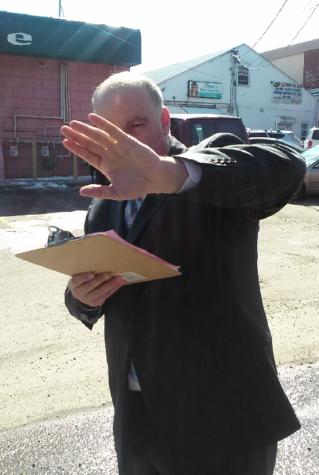

Bancroft and Covington Arrested
BNN is first to report that, just days after the Midlands Gambling Commission voted to grant a second casino license to Avery Bancroft, the Midlands State Police Department arrested Bancroft and Chase Covington, the Commission's chairperson. The arrest came at 2PM on April 20, 2015.
A source inside the MSPD indicates that the arrest is the result of a long-term sting operation aimed at reducing the rampant corruption in Midlands government. Bancroft is notorious in Midlands business and political circles for active involvement in political campaigns, most recently as a vocal (and financial) supporter of Max Heisman's mayoral bid. Covington has been long known as the swing vote on the Midlands Gambling Commission, bridging an acrimonious split between the Commission's other two members.
Many have suggested, however, that Covington's vote is for sale to the highest bidder. The uncertainty that surrounds an arrest with so many questions and, currently, so few answers is enormous. What we know right now is that Midlands police have taken Bancroft and Covington into custody, all signs indicate corruption charges are forthcoming, and all evidence indicates that Bancroft bribed Covington.
BNN, as always, is on the scene. Check back right here for updates on this developing story. We'll have updates at least monthly before all is revealed in mid-August.
-
Professional
License Revoked
Dr. Campbell Solo, the newly-appointed Chair of the Midlands Board of Psychology announced today that the Board has preemptively revoked the license of Logan Bashir, PhD., J.D. from practicing in the state. Solo said: "I know that Dr. Bashir was never actually licensed to practice in our state, but we're doing it anyway."
-
Politics and Legal
Jury reaches verdict in Ginger v. Heisman
At approximately 7:00PM on April 19th, a specially assembled jury is expected to reach a final verdict in Ginger v. Heisman, the civil case that has been gripping Midlanders for the past month.
-
Statewide
French Tapped For AMTA Executive Director
Casey French has been appointed AMTA's First Executive Director. She vows never to show up for the job.
-
Local
Tunnel of Terror Reopens

Park owner J.C. Longstreet announced April 1 that the Tunnel of Terror will reopen for the Summer 2015 Season, despite bad publicity faced by the park in the wake of the felony murder of former park security officer Winston Thomas. Previous BNN reports, citing anonymous sources, had indicated that the ride would remain closed until suspect Cameron Poole was apprehended. [Ed: Eventually we will learn to get all of the facts before reporting.]